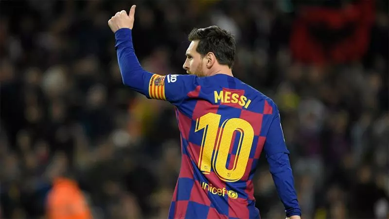
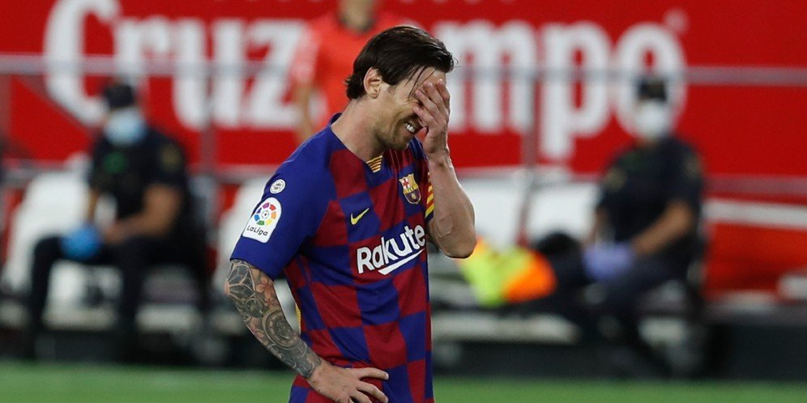
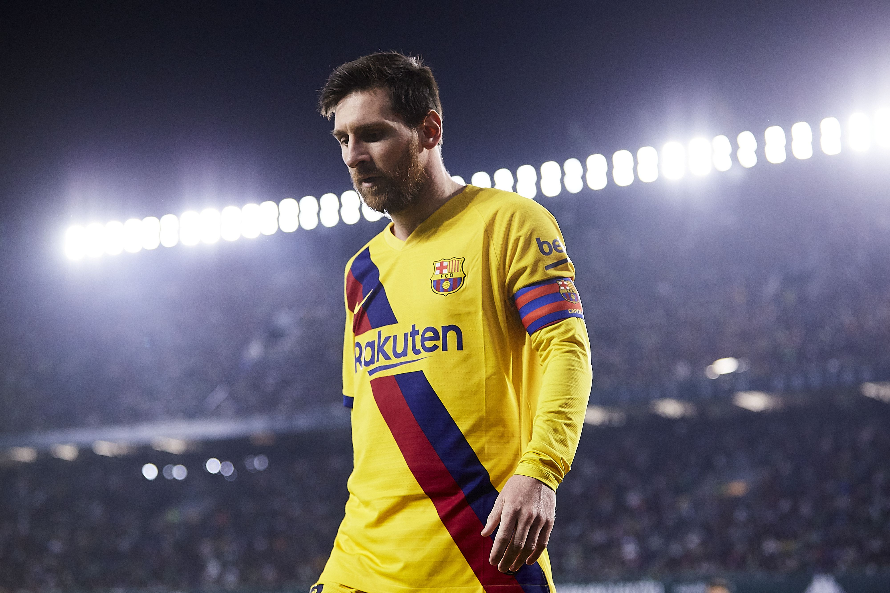

-

keluarga
Messi lahir di Rosario, Provinsi Santa Fe, dari pasangan Jorge Horácio Messi, seorang pekerja pabrik besi dan Celia María Cuccittini, seorang pembersih paruh waktu. Dari garis keturunan ayahnya, ia berasal dari Ancona, sebuah kota di Italia, di mana leluhurnya, Angelo Messi, hijrah ke Argentina pada 1883.[19][20] Ia mempunyai dua orang kakak laki-laki, Rodrigo dan Matías, dan seorang saudara perempuan, María Sol. Di usia lima tahun, Messi mulai bermain sepak bola untuk Grandoli, klub sepak bola lokal yang dilatih ayahnya, Jorge. Pada 1995, Messi bergabung dengan Newell's Old Boys yang berbasis di kampung halamannya, Rosario.[21] Ia menjadi bagian dari pasukan lokal yang hanya kalah sekali dari empat tahun, dan dikenal sebagai "Mesin 87", dari tahun kelahiran mereka.
-

karier awal
Messi bermain untuk tim junior Barca, Infantil B dan Cadete B & A dari 2000 sampai 2003 (mencetak 37 gol dari 30 laga di Cadete A). Musim 2003-04, ia mencetak rekor[26] di lima tim berbeda: tampil satu laga di Juvenil B (satu gol), dan dipromosikan ke Juvenil A (14 laga, 21 gol). Kemudian ia tampil untuk FC Barcelona C di Tercera División, pada 29 November 2003 dan untuk FC Barcelona B di Segunda División B pada 6 Maret 2004. Ia bermain untuk tim-tim tersebut sepanjang musim (delapan laga, lima gol, dan lima laga, tanpa gol)[27][28][29]. Bahkan sebelum debut-debut tersebut, Messi telah tampil secara resmi untuk pertama kali untuk tim utama pada 16 November 2003 dalam usia 16 tahun dan 145 hari, di sebuah laga persahabatan melawan FC Porto.
-

Gaya Bermain
Messi telah dibandingkan dengan rekan senegaranya Diego Maradona, karena gaya bermain dan perawakan mereka yang serupa,[78] memberinya pusat gravitasi yang lebih rendah daripada kebanyakan pemain, sehingga dia lebih lincah dengan arah perubahan yang lebih cepat, membantu dia untuk menghindari tackle.[79] Posturnya yang pendek dan kaki yang kuat memungkinkan dia untuk unggul dalam ledakan singkat akselerasi dan langkahnya yang cepat memungkinkan dia untuk tetap mengontrol bola saat menggiring bola dengan kecepatan. Mantan manajer FC Barcelona, Pep Guardiola, pernah menyatakan.: "Messi adalah satu-satunya pemain yang berjalan lebih cepat dengan bola daripada tanpa bola." [81] Seperti Maradona, Messi adalah pemain dominan kaki kiri.[82] dengan bagian luar kaki kirinya, ia biasanya memulai dribbling berjalan, sementara ia menggunakan bagian dalam kakinya untuk menyelesaikan dan memberikan passing dan assist untuk rekan-rekan setimnya
Messi sering melakukan dribbling individu dengan berlari mencetak gol, khususnya selama skema serangan balik, biasanya dimulai dari garis tengah, atau kanan lapangan, meskipun ia juga telah digambarkan sebagai pemain serbaguna, dengan visi yang baik, yang dikenal karena keakuratannya dan kombinasi permainan kreatif, khususnya dengan rekan tim Barcelona Xavi dan Iniesta [83][84][85] Ia juga merupakan spesialis set piece yang akurat dan pengambil tendangan penalti [86]. Sehubungan dengan kemampuan dribbling-nya, Maradona mengatakan Messi: "bola tetap merekat pada kakinya, saya telah melihat pemain besar dalam karier saya, tetapi saya belum pernah melihat orang dengan kontrol bola seperti Messi. " [87] Maradona telah menyatakan bahwa ia percaya Messi untuk saat ini menjadi pemain terbesar di dunia